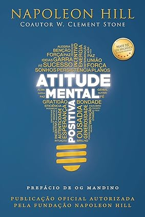

CATALOGOS DE LIVROS COM DIFERENTES GENEROS
CLIQUE EM CADA TOPICO PARA VISUALIZAR OS LIVROS OU OCULTALOSLIVROS SOBRE SAUDE EMOCIONAL
Este livro é sobre prazer. É também sobre sofrimento. Mas mais importante, é um livro que trata de como encontrar o delicado equilíbrio entre os dois, e por que hoje em dia, mais do que nunca, encontrar o equilíbrio é essencial. Estamos vivendo em uma época de excessos, de acesso sem precedentes a estímulos de alta recompensa e alta dopamina: drogas, comida, notícias, jogos, compras, sexo, redes sociais. A variedade e a potência desses estímulos são impressionantes – assim como seu poder adictivo. Nossos telefones celulares oferecem dopamina digital 24 horas por dia, 7 dias por semana, para uma sociedade ao mesmo tempo conectada e alheia do que acontece ao redor. Estamos todos vulneráveis ao consumo excessivo e à compulsão.
Os efeitos colaterais do discurso motivacional, O mercado de palestras e livros motivacionais está crescendo desde o início do século XXI e não mostra sinais de desaquecimento. Religiões tradicionais estão perdendo adeptos para novas igrejas que trocam o discurso do pecado pelo encorajamento e autoajuda. As instituições políticas e empresariais mudaram o sistema de punição, hierarquia e combate ao concorrente pelas positividades do estímulo, eficiência e reconhecimento social pela superação das próprias limitações. Byung-Chul Han mostra que a sociedade disciplinar e repressora do século XX descrita por Michel Foucault perde espaço para uma nova forma de organização coercitiva: a violência neuronal. As pessoas se cobram cada vez mais para apresentar resultados - tornando elas mesmas vigilantes e carrascas de suas ações. Em uma época onde poderíamos trabalhar menos e ganhar mais, a ideologia da positividade opera uma inversão perversa: nos submetemos a trabalhar mais e a receber menos. Essa onda do 'eu consigo' e do 'yes, we can' tem gerado um aumento significativo de doenças como depressão, transtornos de personalidade, síndromes como hiperatividade e burnout. Este livro transcende o campo filosófico e pode ajudar educadores, psicólogos e gestores a entender os novos problemas do século XXI.
Como você está se sentindo hoje? Se sua resposta for um desanimado “vou indo”, um mero “mais ou menos” ou um ressonante “exausto”, pare por um momento e respire. Talvez você não consiga identificar exatamente por quê, mas sabe que não está tudo bem.
Neste livro, a Dra. Anna Lembke, autora do best-seller Nação dopamina , volta o seu olhar para as forças invisíveis que estão por trás da dependência em diversos medicamentos receitados todos os dias para jovens, adultos e crianças.Nos dias de hoje, a velocidade do mundo promove pílulas como soluções rápidas. Como se não bastasse, as grandes corporações farmacêuticas em conjunto com os planos de saúde se valem de uma burocracia que estimula o uso de comprimidos, a indicação de procedimentos muitas vezes protelatórios e a solução provisória dos problemas em vez de promover o bem-estar do paciente a longo prazo.
Um clássico de Napoleon Hill que tem mudado milhões de vidas! Sua mente é um talismã secreto. De um lado é dominado pelas letras AMP (Atitude Mental Positiva) e, por outro, pelas letras AMN (Atitude Mental Negativa). Uma atitude positiva irá, naturalmente, atrair sucesso e prosperidade. A atitude negativa vai roubá-lo de tudo que torna a vida digna de ser vivida.
LIVROS SOBRE AMOR
Jenna Ortega, estrela da série Wandinha, teve que equilibrar sua carreira como atriz, sua vida particular e muitas expectativas públicas desde bem jovem. Com isso, aprendeu que a única forma de superar esses desafios é por meio do amor: por seus amigos, sua família, sua fé e, acima de tudo, por si mesma .
Jeannie sempre sonhou com uma grande paixão, e agora finalmente está vivendo um romance avassalador com Dan, um jovem veterinário. Depois de menos de um ano de namoro, ele a pede em casamento durante um fim de semana romântico em Nova York. .
A era da modernidade líquida em que vivemos ― um mundo repleto de sinais confusos, propenso a mudar com rapidez e de forma imprevisível ― é fatal para nossa capacidade de amar, seja esse amor direcionado ao próximo ou a nós mesmos. .
Por que amamos? O que está por trás desse sentimento que, segundo dizem, move montanhas? É se debruçando sobre a filosofia, a ancestralidade, mitos africanos, indígenas, orientais, ocidentais e até sobre a biologia que Renato Noguera nos leva a refletir sobre os diferentes significados do amor..
LIVROS SOBRE CONTROLE FINANCEIRO
"A habilidade de comunicação de Beto é facilmente percebida nestas páginas. Seu autor transforma em leitura gostosa, amigável e de fácil compreensão um assunto que, para alguns, é bastante complexo." Prof. Edgar Abreu.

O sucesso financeiro tem menos a ver com a sua inteligência e muito mais a ver com o seu comportamento. E a forma como alguém se comporta é uma coisa difícil de se ensinar, mesmo para pessoas bastante inteligentes. .
Já parou para refletir se você tem trabalhado para o dinheiro ou se é ele que trabalha para você? Melhor, o dinheiro tem contribuído para que você alcance aquilo que tanto almeja? A conquista de uma casa própria, a compra de um automóvel, a faculdade dos filhos, a aposentadoria com tranquilidade financeira ou aquela tão sonhada viagem.
Em “Finanças Organizadas, Mentes Tranquilas”, Danilo H. Gomes apresenta um guia prático e inspirador para aqueles que buscam equilíbrio financeiro e paz mental. Este livro não apenas oferece orientações sobre como organizar suas finanças, mas também fornece insights valiosos sobre como alcançar a tranquilidade emocional através do controle financeiro. Seja você um iniciante no mundo das finanças ou alguém em busca de uma nova perspectiva, esta obra é o seu caminho para uma vida mais estável e serena..
LIVROS SOBRE ROMANCE

Quando o café fecha as portas, Lou é obrigada a procurar outro emprego. Sem muitas qualificações, consegue trabalho como cuidadora de um tetraplégico. Will Traynor, de 35 anos, é inteligente, rico e mal-humorado. Preso a uma cadeira de rodas depois de um acidente de moto, o antes ativo e esportivo Will desconta toda a sua amargura em quem estiver por perto. Tudo parece pequeno e sem graça para ele, que sabe exatamente como dar um fim a esse sentimento. O que Will não sabe é que Lou está prestes a trazer cor a sua vida. E nenhum dos dois desconfia de que irá mudar para sempre a história um do outro. .
Em Depois de você, Lou ainda não superou a perda de Will. Morando em um flat em Londres, ela trabalha como garçonete em um pub no aeroporto. Certo dia, após beber muito, Lou cai do terraço. O terrível acidente a obriga voltar para a casa de sua família, mas também a permite conhecer Sam Fielding, um paramédico cujo trabalho é lidar com a vida e a morte, a única pessoa que parece capaz de compreendê-la. .
autor Babi A. SetteNina é uma jovem patinadora que ficou afastada das pistas por questões familiares. Agora, ela se vê diante do desafio de retornar às competições, dividindo seu tempo entre treinos intensos e trabalhos que paguem as contas. .

Registre sua história de amor única e maravilhosa neste divertido livro para completar e crie um presente emocionante para alguém especial. Sugestões meigas e significativas facilitam a criação de uma lembrança mais pessoal do que um presente padrão. Deixe-o sentimental, seja bobo ou os dois – o que quer que reflita a personalidade de seu relacionamento. Escrevi um livro sobre nós faz parte da série best-seller “Escrevi um livro sobre” e apresenta designs neutros em termos de gênero com letras de mão caprichosas e é uma maneira única de dizer “eu te amo”..